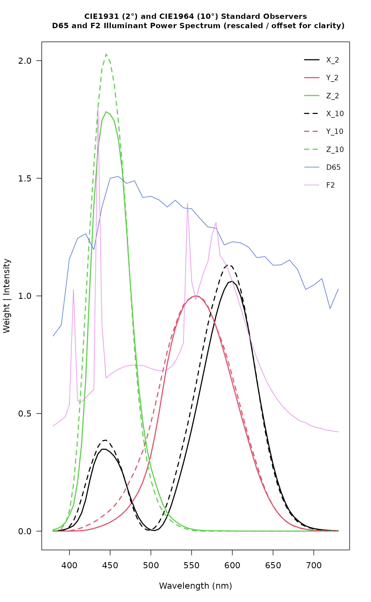

D65 and F2 standard illuminant spectral power distributions, CIE1931 Standard Observer (2 degree), and CIE1964 Supplemental Standard Observer (10 degree)
Usage
data(spectral.reference)References
Marcus, R.T. (1998). The Measurement of Color. In K. Nassau (Ed.), Color for Science, Art, and Technology (pp. 32-96). North-Holland.
CIE Colorimetry – Part 1: CIE standard colorimetric observers. CIES014-1/E:2006 – ISO 11664-1:2007(E)
CIE. (n.d.). CIE 15:2004 Tables Data. Retrieved from https://law.resource.org/pub/us/cfr/ibr/003/cie.15.2004.tables.xls
Examples
data("spectral.reference")
matplot(
x = spectral.reference[, 1],
y = spectral.reference[, c('xbar_2', 'ybar_2', 'zbar_2')],
ylim = c(0, 2),
type = 'l',
lwd = 2,
lty = 1,
las = 1,
xlab = 'Wavelength (nm)',
ylab = 'Weight | Intensity',
main = "CIE1931 (2\u00B0) and CIE1964 (10\u00B0) Standard Observers
D65 and F2 Illuminant Power Spectrum (rescaled / offset for clarity)",
cex.main = 0.9
)
matlines(
x = spectral.reference[, 1],
y = spectral.reference[, c('xbar_10', 'ybar_10', 'zbar_10')],
type = 'l',
lwd = 2,
lty = 2,
las = 1,
xlab = 'Wavelength (nm)',
ylab = 'Weight | Intensity',
main = 'CIE1931 Standard Observer Weights\nD65 Standard Illuminant'
)
lines(
x = spectral.reference$w,
y = (spectral.reference$D65 / 100) + 0.33,
lty = 1,
col = 'royalblue'
)
lines(
x = spectral.reference$w,
y = (spectral.reference$F2 / 25) + 0.4,
lty = 1,
col = 'violet'
)
legend(
'topright',
legend = c('X_2', 'Y_2', 'Z_2', 'X_10', 'Y_10', 'Z_10', 'D65', 'F2'),
col = c(1, 2, 3, 1, 2, 3, 'royalblue', 'violet'),
lwd = c(2, 2, 2, 2, 2, 2, 1, 1),
lty = c(1, 1, 1, 2, 2, 2, 1, 1),
bty = 'n',
cex = 0.85
)
